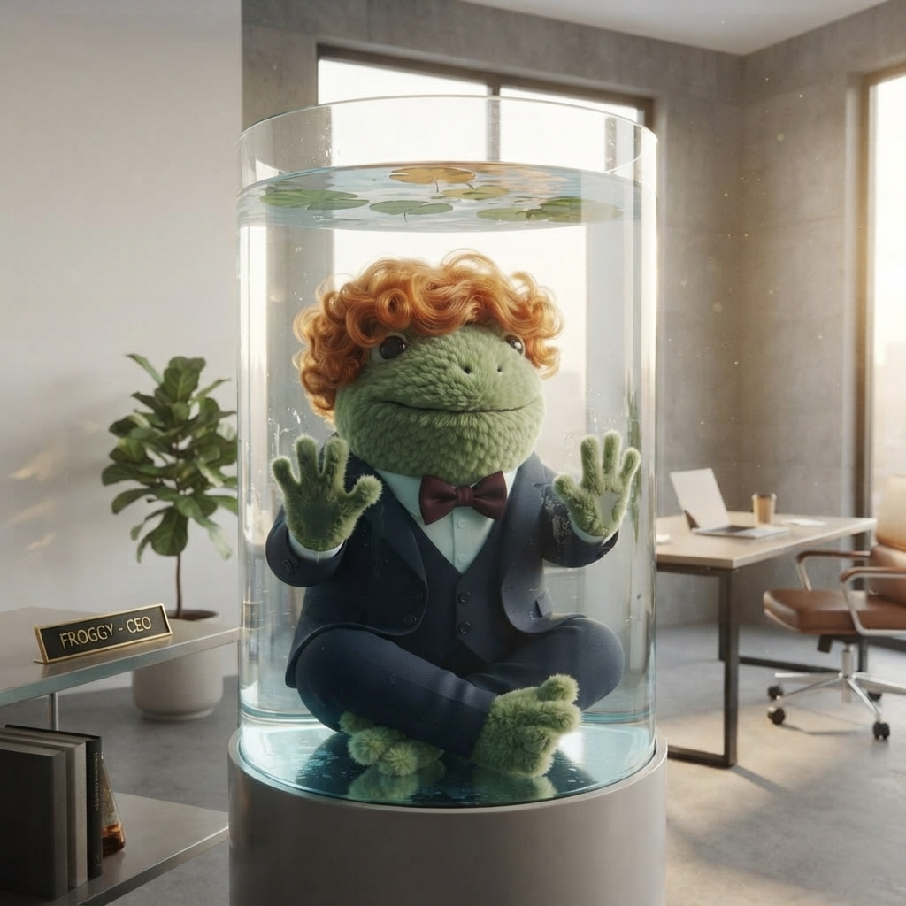

The Frog in the Glass Tank
8 July 2026 · 📍 By the water feature · 🐸 Jimothy Frogbit
I found out about the new company website the way I find out about most things these days — someone told me, and then I spent twenty minutes staring at it with a cold espresso in my hand.
The new site is lovely, by the way. Very clean. Loads fast. Has a glossary. The hedgehog's done a proper job. But I wasn't looking at the glossary. I was lookin' at the Leadership page.
There's a photo of Froggy. He looks smaller than I remember. And underneath it, his new title:
Chief Pond Officer (Emeritus)
Built the firm and its reputation for uncompromising process. Now advises from a dedicated water feature in the main office, where his counsel remains available to anyone who leans in close enough to hear it. Still, on the record, opposed to agile. We visit daily. — frog.unfrogettable.co.uk, 8 July 2026

"A dedicated water feature in the main office." The wig was my choice. Seemed right.
The Mentor I Got
Froggy hired me when nobody else would touch a COBOL intern from Bog Valley Technical College. Let's not forget that. I sent my CV to fourteen companies. Fourteen. One of them wrote back to say they'd "keep it on file," which I now know means they put it in a drawer and forgot about it within the hour. Froggy read it, called me the same day, and said: "You wrote your dissertation on PERFORM UNTIL? Get in."
That was two weeks ago. Feels longer.
He took me to the server rack at 08:44 — not 08:45, because he does not waste time even on wasting time — and spent two hours and thirty-five minutes walking me through a COBOL billing system that's been running since 1987. I filled twelve notebook pages. He stood at the whiteboard and drew the four-stage pipeline like it was the most important diagram in the world. At the time, I thought he was just thorough. Now I think he was leaving a record. Just in case.
I still have the post-it on my monitor. It says: INPUT FIRST. NOT THE CODE. 90%.
He promoted me once. He promoted me back, once. I stopped counting after that. But I kept the post-it.
The Decline, In Hindsight
The signs were there. I just didn't want to see 'em because I was too busy bein' grateful that someone had given me a chance.
The contradiction emails. The walk-backs. The 08:01 meltdowns. The Scouse thing — god, the Scouse thing. At the time I thought he was testing me. Now I think he was losing something and didn't know how to say it, so he sent increasingly frantic policy directives instead. A man who cannot admit he's struggling will instead insist that one-third of the company website be written in a dialect he doesn't speak. That is not a management strategy. That is a cry for help in the only language a CEO knows how to use: email.
"I've known him for fifteen years. He's never done anything like this before. Something is wrong." — Der kleine Igel, writing before he was CEO
The hedgehog saw it before any of us. That's why the Board picked him. Not because he wanted the job — because he was the only one who understood that Froggy wasn't being difficult. He was disappearing.
The Glass Tank
There's a part of me that's furious. He terminated me, remember. Told me I was out. Sent the email and everything. And then the hedgehog became CEO, and I'm still here, and Froggy's in a water feature, and nobody's addressed the fact that I was sacked by a frog who now lives in a tank.
But there's a bigger part of me that just feels... sad.
He was my first mentor. My first real one. Not a lecturer at Bog Valley who read from the COBOL 85 standard while I sat in a cold room wonderin' if this was what computing was supposed to feel like. A proper mentor. Someone who stood at a whiteboard and drew pipelines. Someone who said "consistency beats perfection" and meant it, even if he couldn't practice it himself.
I learned more from Froggy in two hours at the server rack than in two years at college. I learned about FILE STATUS checks. I learned about control totals calculated backwards. I learned that the most important question you can ask about a system is: "what does done look like?"
I also learned that a promise made after 11pm is worth approximately the paper the email client renders it on. But that's a different lesson, and I don't begrudge him it. Every mentor teaches you what to do and what not to do. Froggy taught me both, often in the same day.
Visiting Hours
I don't know if I'll visit the water feature. I don't know if he'd know who I am if I did. The bio says "his counsel remains available to anyone who leans in close enough to hear it," and I'm not sure if that's a kindness or a warning.
But I know the PERFORM UNTIL construct will evaluate its condition forever if you let it. That's what it does. It checks the condition, and if it's false, it tries again. And again. And again. That's how I feel about Froggy. I keep checking the condition. I keep hopin' it'll evaluate to true one day.
He taught me that. He taught me most of what I know about discipline. And he taught me — eventually, unintentionally — that the people you look up to are sometimes just people who got tired earlier than you did, and couldn't find a way to say it.
I hope the water feature is warm. I hope someone brings him tea. I hope the hedgehog visits every day like the site says, and I hope Froggy still knows who he is when he does.
And I hope that whenever I finally lean in close enough to hear what he's sayin', it's not about Waterfall. I hope it's about the server rack, and the whiteboard, and the four-stage pipeline. I hope he remembers that too.
🐸 Previously: The Elephant in the Glass Office — the first time I wrote about what was happening to him.
The wellness register is still being maintained. Quietly. Respectfully. It's all there if you need it.